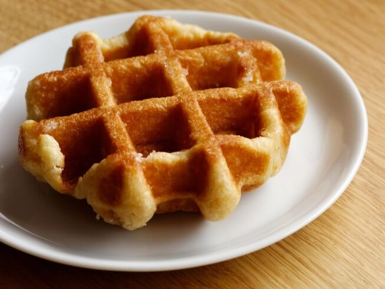

| Belgian waffles | Envelopes With Apples | Cracked Cookies | Waffle Tubes |
|---|---|---|---|
|  |

|

|
|
|
In North America, Belgian waffles are a variety of waffle with a lighter batter, larger squares, and deeper pockets than American waffles. Belgian waffles were originally leavened with yeast, but baking powder is now often used |
Envelopes are simple to make: prepare a cottage cheese dough, as a filling I use apples, you can replace them with pears, dried fruits or come up with another stuffing, according to your taste |
These traditional Christmas cookies are a cut above the rest because they’re as rich and fudgy as brownies. They’re thick and soft-baked in the centers with a little extra chocolate for good measure! |
The taste of tender, sweet and crunchy waffle tubes is familiar to all of us from childhood. This appetizing dessert has become a favorite delicacy of many children, and adults will love these delicacies. You can cook incense sticks at home with a waffle iron |